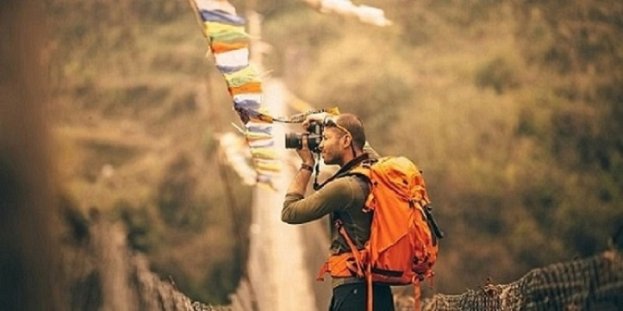

Самостоятельные путешествия доступны каждому!
Блог путешественника Олега Иванова
Блог о самостоятельных путешествиях. Отчеты, отзывы, путеводители
Приветствую вас!
Я Олег Иванов, медиа-эксперт в сфере авиации, путешествий и фотографии. Это авторский проект о путешествиях и авиации, необычных местах, ярких идеях и полезных советах.
Каждый день интересные заметки выходят на моей странике в Facebook и в Instagram, а также на мой канал на YouTube и в Telegram.
На этом сайте вы найдете:
- интервью с местными жителями из зарубежных стран
- интервью с россиянами, которые делятся историями про переезд за границу
- истории других путешественников
- лайфхаки про путешествия
Дневник путешественника
Лучшие подарки путешественникам: топ-12 идей на День всех влюбленных, 23 февраля и 8 марта 2020
Автор
Алексей ПетровДата публикации
02/02/2020
Зеленая карта на автомобиль: стоимость 2020, как купить онлайн и отзыв о Полис 812
Автор
Александр МарченковДата публикации
20/01/2020

Лучшие цитаты о путешествиях - известные высказывания и афоризмы
Автор
Дмитрий КовчукДата публикации
10/01/2020
 Читать далее
Читать далее